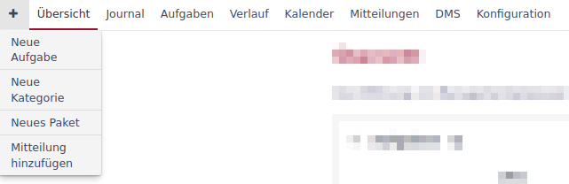
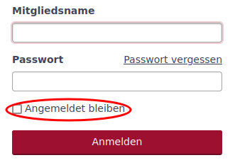
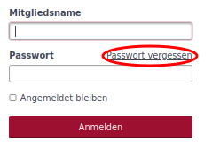

Konfiguration
Einstellungen, die eine globale Wirkung entfalten, werden im Administrationsbereich unter Konfiguration festgelegt.
Allgemein
| Parameter | Beschreibung |
|---|---|
Applikationstitel |
Name der Anwendung, der links unterhalb des Topmenüs angezeigt wird. |
Willkommenstext |
Text, der auf der Hauptseite im Dashboard-Block Willkommenstext angezeigt wird. |
Objekte pro Seite |
Anzahl der Elemente auf Listenseiten. Die verschiedenen Werte werden Komma-getrennt aufgelistet. |
Suchergebnisse pro Seite |
Standardwert für die Anzahl von Suchergebnissen. |
Anzahl Tage pro Seite des Journals in einem Objekt |
Anzahl der Tage, für chronologisch gelistete Änderungen pro Seite. Standardwert ist 10. Wird 0 eingegeben, werden im Journal keine Ergebnisse angezeigt. |
Hostname |
Die Basis URL für die Anwendung. |
Protokoll |
Festlegung, ob die Client-Serververbindung unverschlüsselt (HTTP) oder verschlüsselt (HTTPS) erfolgt. |
Textformatierung |
Festlegung des Textinterpreters in Langtextfeldern und dem Wiki. Auswahlmöglichkeiten sind
|
Formatierten Text im Cache speichern |
Texte, die größer als 2 KB sind werden gecacht. |
Wiki-Historie komprimieren |
Wiki-Inhalte werden versioniert. Versionen werden mit gzip komprimiert bevor der Text in der Datenbank gespeichert wird. |
Maximale Anzahl Einträge pro Atom-Feed |
Definiert die Anzahl der Einträge im RSS-Feed, den die Anwendung bereitstellt. |
Anzeige
| Parameter | Beschreibung | ||
|---|---|---|---|
Design-Stil |
Auswahl des Designs (Theme), in dem die Anwendung dargestellt wird. Das bevorzugte Theme ist Omnia. Das Theme Standard ist als Fallback-Lösung gedacht. |
||
Standardsprache |
Die Standardsprache wird verwendet, wenn keine anderen Sprachinformationen aus dem Rechnerprofil oder dem Anwenderprofil vorliegen. |
||
Standardsprache für anonyme Benutzer erzwingen |
Anonyme Benutzer bekommen Inhalte stets in Standardsprache präsentiert.
|
||
Standardsprache für angemeldete Benutzer erzwingen |
Anonyme Benutzer bekommen Inhalte stets in Standardsprache präsentiert. Die Sprachauswahl wird für den Benutzer dann nicht angezeigt. |
||
Wochenanfang |
Setzt den Wochenanfang in der Anwendung. Bei der Auswahl Sprachabhängig wird ein der Sprache fest zugeordnetes Datumsformat gewählt. Ist die Standardsprache nicht festgelegt (siehe oben), wird je nach Nutzer eine spezifisches Format gewählt. |
||
Datumsformat |
Bestimmt die Darstellung des Datums in der Anwendung. Ist die Standardsprache nicht festgelegt (siehe oben), wird je nach Nutzer eine spezifisches Format gewählt. |
||
Zeitformat |
Bestimmt die Darstellung der Zeit in der Anwendung. Ist die Standardsprache nicht festgelegt (siehe oben), wird je nach Nutzer eine spezifisches Format gewählt. |
||
Format für Zeitspannen |
Setzt das Format einer Zeitspanne in der Anwendung. Es kann zwischen einer dezimalen Anzeige (45 Minuten entsprechen 0,75) und einer Minuten-Anzeige (45 Minuten sind 0:45 h) gewählt werden. |
||
Benutzer-Anzeigeformat |
Legt fest, wie der Benutzer, definiert aus Mitgliedsname, Vorname und Name, in der Anwendung dargestellt wird. |
||
Gravatar-Benutzerbilder benutzen |
Über den Haken kann die Gravatar-Funktion zugeschaltet. Im Normalfall nutzt die Funktion die Gravatare von gravatar.com. Es können aber auch andere Gravatarquellen in der
|
||
Standard-Gravatar-Bild |
Werden Gravatar-Benutzerbilder genutzt, kann das Standard-Gravatar-Bild gewählt werden. |
||
Vorschaubilder von Dateianhängen anzeigen |
Auswahl legt fest, ob ein Vorschaubild (bei bekannten Formaten) angezeigt wird oder nicht. |
||
Größe der Vorschaubilder (in Pixeln) |
Legt die Größe des Vorschaubildes fest, wenn die Auswahl Vorschaubilder von Dateianhängen anzeigen gewählt wurde. |
||
Menü zum Anlegen neuer Objekte |
Blendet je nach Auswahl spezielle Menüpunkte ein, wie z.B. das + im folgenden Bild, mit denen neue Objekte erzeugt werden können.  |
Authentifizierung
| Parameter | Beschreibung |
|---|---|
Authentifizierung erforderlich |
Wird diese Einstellung auf Ja gesetzt, kann auf Daten (auch öffentliche) nur nach einer Anmeldung zugegriffen werden. |
Automatische Anmeldung läuft ab nach |
Mit dieser Funktion bekommt der Anwender die Möglichkeit Angemeldet bleiben zu setzen.  So braucht der Anwender sich nicht erneut anmelden, wenn er die Anwendung mit den selben Browser aufruft. Über die Auswahl legt der Administrator fest, ob die Funktion zur Verfügung steht (im Standard ist die Funktion gesperrt) oder für wie viele Tage die automatische Anmeldung gilt. Zur Auswahl stehen: 1 Tag, 7 Tage, 30 Tage oder 365 Tage. |
Registrierung ermöglichen |
In diesem Feld legt der Administrator fest, ob und wie eine Selbstregistrierung durch den Anwender möglich ist. Zur Auswahl stehen
|
Benutzerdefinierte Felder bei der Registrierung abfragen |
Sind Eigene Felder für Benutzer definiert, können diese dem Anwender bei der Registrierung angezeigt werden. |
Mindestlänge des Passworts |
Legt die Mindestlänge von Passwörtern fest. |
Für Passwörter benötigte Zeichenklassen |
Legt die Mindestvorgaben für die Passwortkomplexität fest. Gefordert werden können
|
Erzwinge Passwortwechsel nach |
Erzwingt einen Passwortwechsel durch den Benutzer nach einer festgelegten Zeit. Zur Auswahl stehen: gesperrt (kein erzwungener Passwortwechsel), 7 Tage, 60 Tage, 90 Tage, 180 Tage und 365 Tage. |
Zurücksetzen des Passworts per E-Mail erlauben |
Dem Anwender wird erlaubt, sein Passwort zurückzusetzen. Es erscheint in der Anmeldemaske der Link Passwort vergessen.  Bei Klick auf den Link wird das Passwort des Anwenders zurückgesetzt. Er erhält einen Link, über den er ein neues Passwort erstellen kann. |
Zwei-Faktor-Authentifizierung |
Es wird festgelegt welche Optionen der Anwender bzgl. der 2-Faktor-Authentifizierung hat:
|
Erlaube OpenID-Anmeldung und -Registrierung |
Die Anmeldung über einen OpenID-Provider wird erlaubt. |
Ende einer Sitzung |
|
Längste Dauer einer Sitzung |
Legt die Dauer fest, wann eine Sitzung spätestens beendet wird. |
Zeitüberschreitung bei Inaktivität |
Legt die Dauer fest, nach welcher Zeit eine Sitzung bei Inaktivität beendet wird. |
API
| Parameter | Beschreibung |
|---|---|
REST-Schnittstelle aktivieren |
Die Rest-API kann zum systemübergreifenden Austausch von Daten aktiviert werden. |
JSONP Unterstützung aktivieren |
Daten können im JSON-Format systemübergreifend synchronisiert werden. |
Objekte
| Parameter | Beschreibung |
|---|---|
Neue Objekte sind standardmäßig öffentlich |
Neue Objekte werden automatisch als öffentlich angelegt. Diese Einstellung kann manuell in jedem Objekt wieder abgewählt werden. |
Standardmäßig aktivierte Module für neue Objekte |
Die ausgewählten Module werden beim Erstellen eines neuen Objekts automatisch gesetzt. Die Auswahl kann manuell oder durch Vorkonfiguration der Objektklasse angepasst werden. |
Standardmäßig aktivierter Aufgabentyp für neue Objekte |
Die ausgewählten Aufgabentypen werden beim Erstellen eines neuen Objekts automatisch gesetzt. Die Auswahl kann manuell oder durch Vorkonfiguration der Objektklasse angepasst werden. |
Fortlaufende Objektkennungen generieren |
Für die Kennung der Objekte wird der letzte Objektname gewählt und anschließend das letzte Zeichen hochgezählt. Handelt es sich um eine Zahl, wird diese numerisch hochgezählt. Handelt es sich um einen Buchstaben wird alphabetisch hochgezählt. |
Rolle, die einem Nicht-Administrator zugeordnet wird, der ein Objekt erstellt |
Legt ein Nicht-Administrator ein Objekt an, so erhält der Ersteller die vordefinierte Rolle. Damit wird sichergestellt, dass ein Nicht-Administrator Rechte erhält, mit dem er bei Bedarf das Objekt weiter bearbeiten kann. |
Voreinstellungen Objektliste |
|
Ergebnisse anzeigen als |
Die Auswahl Karte oder Liste legt fest, wie die Objektübersicht (Zugang über Topmenü » Objekte) angezeigt wird. |
Spaltenauswahl |
Standardauswahl der Tabellenspalten für das Format Liste. |
Benutzer
| Parameter | Beschreibung | ||
|---|---|---|---|
Maximale Anzahl zusätzlicher E-Mail-Adressen |
Festlegung, wie viele zusätzliche E-Mails ein Anwender seinem Konto hinzufügen kann.
|
||
Erlaubte E-Mail Domains |
Einschränkung der E-Mail-Domains über eine Whitelist. |
||
Gesperrte E-Mail Domains |
Einschränkung der E-Mail-Domains über eine Blacklist. |
||
Benutzer erlauben, das eigene Benutzerkonto zu löschen |
Wird ein Benutzer gelöscht, werden alle Referenzen zu seiner Person mit dem Benutzer Anonym verknüpft. Das Konto über den Administrator zu sperren, ist oft die bessere Alternative. |
||
Standardwerte für neue Benutzer |
|||
E-Mail-Adresse nicht anzeigen |
Beim Anlegen eines neuen Benutzers wird das Attribut E-Mail-Adresse nicht anzeigen gesetzt. Diese Einstellung kann im Rahmen der Bearbeitung geändert werden. |
||
Standard Benachrichtigungsoption |
Beim Anlegen eines neuen Benutzers wird das Attribut Benachrichtigungsoption gesetzt. Diese Einstellung kann im Rahmen der Bearbeitung geändert werden. |
||
Ich möchte nicht über Änderungen benachrichtigt werden, die ich selbst durchführe. |
Beim Anlegen eines neuen Benutzers wird das Attribut Ich möchte nicht über Änderungen benachrichtigt werden, die ich selbst durchführe. gesetzt. Diese Einstellung kann im Rahmen der Bearbeitung geändert werden. |
||
Zeitzone |
Beim Anlegen eines neuen Benutzers wird das Attribut Zeitzone gesetzt. Diese Einstellung kann im Rahmen der Bearbeitung geändert werden. |
||
Aufgaben
| Parameter | Beschreibung | ||
|---|---|---|---|
Aufgaben-Beziehungen zwischen Objekten erlauben |
Erlaubt eine objektübergreifende Verknüpfung von Aufgaben. |
||
Aufgaben beim Kopieren verlinken |
Diese Einstellung legt fest, wie eine Kopie mit dem Original verknüpft werden soll:
|
||
Objektübergreifende Unteraufgaben erlauben |
Mit der Auswahl wird festgelegt, zu welchen Objekten Unteraufgaben zugeordnet werden können:
|
||
Duplikate automatisch schließen |
Gibt es zu einer Aufgabe ein Duplikat (zugehörige Aufgabe vom Typ: Dupliziert durch), so werden Duplikate von erledigten Aufgaben ebenfalls auf erledigt gesetzt. |
||
Aufgabenzuweisung an Gruppen erlauben |
Aufgaben können nicht nur an Mitglieder sondern auch an Gruppen zugewiesen werden. Benachrichtigungen werden an alle Gruppenmitglieder gesendet. |
||
Aktuelles Datum als Beginn für neue Aufgaben verwenden |
Beim Anlegen einer neuen Aufgabe wird automatisch das aktuelle Datum in das Feld Beginn eingetragen. |
||
Aufgaben von Unterobjekten im Hauptobjekt anzeigen |
Mit der Auswahl der Option werden in der Aufgabenliste eines Objekts auch die Aufgaben der hierarchisch untergeordneten Objekte mit angezeigt. |
||
Berechne den Aufgaben-Fortschritt mittels |
Wird die Option Aufgabenstatus gewählt, so kann für jeden Aufgabenstatus der Fortschritt in % vordefiniert werden. |
||
Arbeitsfreie Tage |
Arbeitsfreie Tage werden im Kalender grau hinterlegt. |
||
Maximale Anzahl Aufgaben bei CSV/PDF-Export |
Hier wird die maximale Anzahl an Aufgaben definiert, die mit einem einzelnen Export exportiert werden können. |
||
Maximale Anzahl von Aufgaben, die im Verlauf angezeigt werden |
Hier wird die maximale Anzahl an Aufgaben definiert, die im Verlauf (Gantt-Diagramm) angezeigt werden. |
||
Maximal anzeigbare Monate im Gantt-Diagramm |
Hier wird die maximale Anzahl der angezeigten Monate definiert, die im Verlauf (Gantt-Diagramm) angezeigt werden. |
||
Eigenschaften übergeordneter Aufgaben |
|||
Beginn / Abgabedatum |
Festlegung, wie Beginn und Abgabedatum von übergeordneten Aufgaben festgelegt werden.
|
||
Priorität |
Festlegung, wie die Priorität von übergeordneten Aufgaben festgelegt wird.
|
||
% erledigt |
Festlegung, wie die Aufgaben-Fortschritte (% erledigt) von übergeordneten Aufgaben festgelegt wird.
|
||
Standard-Spalten in der Aufgaben-Auflistung |
|||
Spaltenauswahl |
Legt fest, welche Informationen in der Aufgabenliste angezeigt werden. |
||
Zeiterfassung
| Parameter | Beschreibung |
|---|---|
Erforderliche Felder für Zeitbuchungen |
Legt fest, ob die Angabe der Aufgabe und/oder der Kommentar Pflichtfelder bei einer Zeitbuchung sind. |
Maximale Anzahl der täglich buchbaren Stunden pro Benutzer |
Der Benutzer wird informiert, wenn er mehr als die maximal erlaubte Anzahl an Stunden für einen Tag buchen möchte. |
Akzeptiere Buchungen mit 0 Stunden |
Bei Anwahl wird eine Buchung mit 0 Stunden akzeptiert. Sonst gibt das System eine Fehlermeldung aus. |
Akzeptiere Zeitbuchungen in der Zukunft |
Bei Auswahl werden auch Zeitbuchungen für die Zukunft akzeptiert. |
Standard-Spalten in der Zeiten-Auflistung |
|
Spaltenauswahl |
Die Auswahl und Reihenfolge der Attribute in der Liste Ausgewählte Spalten legt fest, welche Informationen in der Liste Aufgewendetet Zeit angezeigt werden. |
Dateien
| Parameter | Beschreibung | ||
|---|---|---|---|
Maximale Dateigröße |
Der Eintrag legt die maximale Größe einer Datei fest, der beim Upload erlaubt wird.
|
||
Maximalgröße für den aggregierten Download von Anhängen |
Der Eintrag begrenzt die Größe der hochladbaren Dateien. |
||
Zugelassene Dateitypen |
Whitelist der zum Upload freigegebenen Dateitypen. Die erlaubten Dateianhänge werden kommagetrennt in das Feld eingetragen (Bsp.:txt, png). Ist das Feld leer, sind alle Anhänge erlaubt. |
||
Nicht zugelassene Dateitypen |
Blacklist der zum Upload freigegebenen Dateitypen. Die gesperrten Dateianhänge werden kommagetrennt in das Feld eingetragen (Bsp.:exe, pdf). Ist das Feld leer, sind alle Anhänge erlaubt. |
||
Maximale Größe inline angezeigter Textdateien |
Der Eintrag begrenzt (Inline)-Anzeige von Text-Dateien auf die definierte Größe. Auf diese Weise sollen Performance-Probleme vermieden werden. |
||
Maximale Anzahl anzuzeigender Diff-Zeilen |
Der Eintrag begrenzt die Anzahl von Diff-Zeilen bei Versionsvergleichen (z.B in den Modulen Wiki oder Archiv und bei hochgeladenen Diff-Dateien) |
||
Kodierung von Anhängen und Archiven |
Mit dieser Option lässt sich für Archiv-Dateien die bevorzugte Kodierung festlegen. Die Kodierung wird genutzt um Inhalten und Differenzen in Text-Dateien in die UTF-8 Kodierung umzuwandeln. Sie wird benötigt, um die Inhalte im Browser anzuzeigen. |
Mailbenachrichtigungen
| Parameter | Beschreibung |
|---|---|
E-Mail-Absender |
Eintrag legt die E-Mail-Adresse für den E-Mail-Versand fest. |
E-Mails als Blindkopie (BCC) senden |
Bei Auswahl der Option werden die E-Mails als Blindkopiee (Empfänger sieht nicht die weiteren Empfänger der Mail) versendet. |
Nur reinen Text (kein HTML) senden |
Bei Auswahl der Option wird kein HTML-Inhalt in der Mail versendet. |
Zeige Statusänderungen im Betreff der E-Mailbenachrichtigung für Aufgaben |
Bei Auswahl der Option wird die Statusänderung einer Aufgabe im Betreff angezeigt. |
Bitte wählen Sie die Aktionen aus, für die eine E-Mail-Benachrichtigung gesendet werden soll. |
|
Auswahl |
Über die Auswahl wird festgelegt, bei welchen Aktionen der Anwender benachrichtigt wird. |
E-Mail-Kopfzeile |
|
Text |
Legt den Kopftext in der E-Mail fest. |
E-Mail-Fußzeile |
|
Text |
Legt den Fuß-Text in der E-Mail fest. |
Eingehende E-Mails
xmera Omnia bietet die Möglichkeit E-Mails zu empfangen.
Der Text der E-Mail wird einer Aufgabe als Kommentar hinzugefügt, wenn in der Bemerkungszeile die Aufgaben-ID (z.B. #123) vorhanden ist. Ansonsten wird eine neue Aufgabe erzeugt. E-Mail-Anhänge werden der Aufgabe als Anhang zugeordnet.
Für die Zuordnung der E-Mail zum Anwender in xmera Omnia wird die From-Adresse genutzt und mit den E-Mail-Adressen der Anwender abgeglichen. Bei entsprechender Konfiguration im Server können unbekannte E-Mail-Absender als Benutzer angelegt werden oder abgewiesen werden.
Um das zu ermöglichen, muss der E-Mail-Empfang auf dem Server konfiguriert werden. Weitere Informationen: Receiving emails.
| Parameter | Beschreibung |
|---|---|
Schneide E-Mail nach einer dieser Zeilen ab |
Es wird nach einem oder mehreren Ausdücken (Zeilen im Definitionsfeld) gesucht, nach der der Text im Kommentar abgeschnitten wird. So lassen sich z.B. Signaturen oder Mailverläufe entfernen. |
Anhänge nach Name ausschließen |
Anhänge einer Mail werden als Dokument der Aufgabe zugeordent. Ausgeschlossen sind Anhänge, die in diesem Feld (kommagetrennt) aufgelistet sind. (z.B. smime.p7s, *.vcf) |
Bevorzugter Teil von E-Mails im Multipart-Format |
Festlegung, wie mit E-Mail-Texten im Multipart-Format umgegangen wird. In der Standardeinstellung wird nur der Text verarbeit. Alternativ können auch mit HTML verfasste Inhalte angezeigt werden. |
Abruf eingehender E-Mails aktivieren |
Um die Funktion Eingehende E-Mails nutzen zu können, muss die API-Schnittstelle für den E-Mail-Empfang aktiviert werden. |
API-Schlüssel für eingehende E-Mails |
Feld zur Erzeugung und Eingabe des API-Sicherheitsschlüssels |